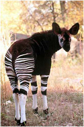
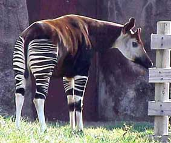
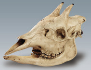
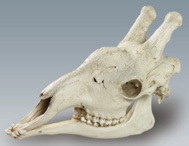

The modern Okapi, the only living close relative of the
giraffe.
Both the giraffe
and the Okapi most likely evolved from a creature known as the
pre-Okapi that
was more like the modern Okapi than the modern giraffe.


Family Resemblance:
Giraffe Skull (right) & Okapi Skull (left)